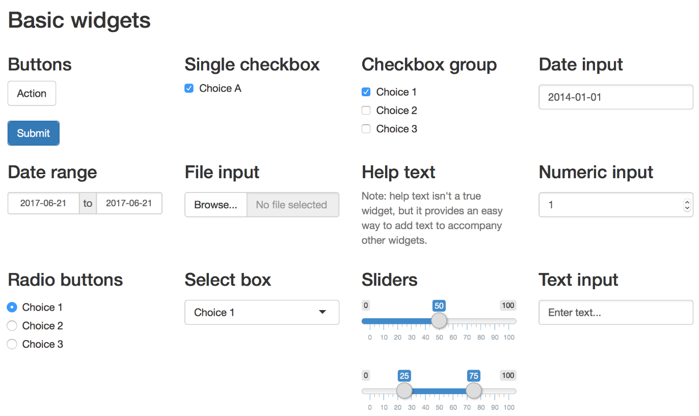

# Fake: serve só para que a data apareça no primeiro slide
ss=Sys.Date()Reprodutibilidade científica
Aplicativos para web com Shiny
Resumo da aula de hoje
- Momento 1: O que é um aplicativo para web.
- Momento 2: O que é
Shiny?
- Momento 3: Quais recursos o
Shinypossui?
- Momento 4: Construindo um aplicativo
Shiny.
- Momento 5: UI (User Interface).
- Momento 6: Códigos do server e outputs.
- Momento 7: Exemplos complexos de aplicativos em
Shiny. - Momento 8: Comnunidades de
Shinyna internet.
1. O que é um aplicativo da web?
Um aplicativo da web é um software que roda em um servidor remoto e interage com o usuário através de um browser.
O software é dividido entre UI (User Interface), que corresponde ao frontend, e códigos do servidor, que corresponde ao backend.
Uma das vantagens de um aplicativo web é que não há a necessidade de instalação do software na máquina do usuário. Todo o processamento é feito remotamente e devolvido para o browser.
2. O que é Shiny?
Shiny é um framework para a criação de aplicativos da web que usa códigos do R, que são interativos e reativos, ou seja, obedecem a controles manipulados pelo usuário e mostram um output na tela.
Shiny é capaz de criar aplicativos complexos de forma muito simples, que de outra maneira demandaria muito tempo para serem construídos em JavaScript e HTML.
Para aprender Shiny, basta ter uma boa noção de códigos em R.
3. Quais recursos o Shiny possui?
- Fácil de usar e aprender.
- O tempo do desenvolvimento é minimizado.
- Excelente ferramenta para visualização de dados.
- Tem um apoio forte da linguagem R.
- Cria aplicativos da web úteis com apenas algumas linhas de códigos.
- Funciona em qualquer ambiente R (Console do R ou RStudio).
- É possível enriquecer o layout dos aplicativos usando HTML ou CSS.
- Os aplicativos
Shinysão “ativos” automaticamente. As saídas mudam instantaneamente conforme os usuários modificam as entradas, sem a necessidade de recarregar o navegador.
4. Construindo um aplicativo Shiny.
Não é necessário instalar nada no RStudio para usar o Shiny atualmente. Versões mais antigas do RStudio precisam instalar o pacote e carregá-lo:
# install.packages('shiny')
# library(shiny)No RStudio, para criar novo app da web, use:
# File>New file>Shiny web appA estrutura do novo arquivo vem com um exemplo de app pronto. No entanto, a estrutura mais básica de um app é a seguinte:
library(shiny)
ui <- fluidPage(
'Hello, world!'
)
server <- function(input, output, session) {
}
shinyApp(ui = ui, server = server)5. UI (User Interface)
Shiny traz uma série de controles (widgets) para a construção de UI:

6. Códigos do server e outputs.
Os códigos do server são usados para capturar os inputs da UI e realizar os cáculos necessários, que serão devolvidos ao usuário na seção output.
Nesta parte entram basicamente códigos do R e qualquer background poderá aproveitado.
8. Exemplos em Shiny no RStudio.
A seguir, aplicatitivos da web feitos no RStudio e exemplos de utilização.
8. Exemplos mais complexos de aplicativos em Shiny e referências.
Referência do Shiny